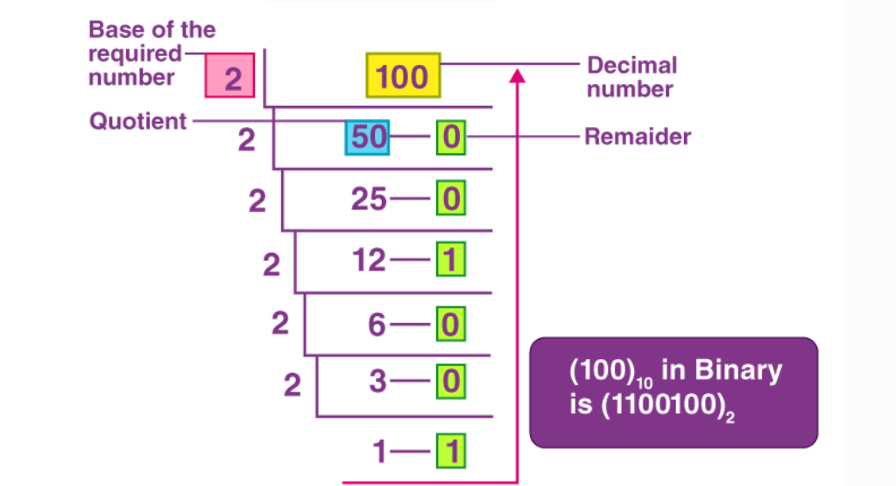
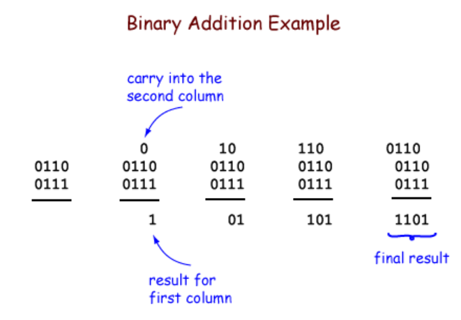

2. පරිගණකයේ දත්ත නිරූපණය - ද්විමය (Binary) පද්ධතිය
සාදරයෙන් පිළිගනිමු මෙම නිබන්ධනයට!
මෙහිදී අපි G.C.E. O/L ICT විෂය නිර්දේශයේ 10 ශ්රේණියේ වැදගත්ම මාතෘකාවක් වන ද්විමය දත්ත නිරූපණය ගැන සියලුම විස්තර සහිතව ඉගෙන ගනිමු.
පියවරෙන් පියවර පැහැදිලි කිරීම්, උදාහරණ, රූප සහ පුහුණු ප්රශ්න සමඟ.
මෙහිදී අපි G.C.E. O/L ICT විෂය නිර්දේශයේ 10 ශ්රේණියේ වැදගත්ම මාතෘකාවක් වන ද්විමය දත්ත නිරූපණය ගැන සියලුම විස්තර සහිතව ඉගෙන ගනිමු.
පියවරෙන් පියවර පැහැදිලි කිරීම්, උදාහරණ, රූප සහ පුහුණු ප්රශ්න සමඟ.
හැඳින්වීම
ද්විමය පද්ධතිය යනු
පරිගණකයන් දත්ත සැකසීම සඳහා ද්විමය (Binary) සංඛ්යා පද්ධතිය භාවිතා කරනු ලබයි. එය ද්විමය පද්ධතිය වේ.
ද්විමය පද්ධතිය
මෙය ආධාරක 2 (base-2) පද්ධතියක් වන අතර, එහි අංක දෙකක් පමණි: 0 සහ 1. මෙම අංක "බිට්" (bit) ලෙස හැඳින්වේ.- කුමක් නිසා ද්විමය? පරිගණකයේ ඉලෙක්ට්රොනික පරිපථ (circuits) "ඔන්" (on - 1) සහ "ඕෆ්" (off - 0) තත්ත්ව දෙකකින් ක්රියාත්මක වේ. එබැවින් ද්විමය පද්ධතිය පරිගණකයන්ට ගැලපේ.
- bit 8ක් එකතුවී "බයිට්" (byte) එකක් වේ. උදා: 1 KB = 1024 bytes.
2. ද්විමය සංඛ්යාවන්හි බලයන් (Place Values)
ද්විමය සංඛ්යාවක එක් එක් බිට් එක 2න්ගේ බලයන් (powers of 2) නියෝජනය කරයි. දකුණේ සිට වමට:
- 2^0 = 1
- 2^1 = 2
- 2^2 = 4
- 2^3 = 8
- 2^4 = 16
උදාහරණය: 1011 = 1×8 + 0×4 + 1×2 + 1×1 = 11 (දශම)
3. දශම සංඛ්යාවන් ද්විමය බවට පරිවර්තනය
පියවර:
- සංඛ්යාව 2න් බෙදන්න.
- ඉතිරිය ලියන්න.
- බෙදුම් ප්රතිඵලය නැවත 2න් බෙදන්න.
- 0 දක්වා දිගටම සිදු කරන්න.
- ඉතිරි අගයන් පහළ සිට ඉහළට කියවන්න.
උදාහරණය: 13 → 1101
4. ද්විමය සංඛ්යාවන් දශම බවට පරිවර්තනය
ද්විමය සංඛ්යාවක එක් එක් බිට් එක 2න්ගේ බලයන් සමඟ ගුණ කර එකතු කරන්න.
උදාහරණය: 1010 (ද්විමය)
- 1 * 2^3 = 8
- 0 * 2^2 = 0
- 1 * 2^1 = 2
- 0 * 2^0 = 0
එකතුව = 8 + 0 + 2 + 0 = 10 (දශම)
5. ද්විමය ගණිතමය ක්රියා
5.1 ද්විමය එකතුව (Binary Addition)
නීති:
- 0 + 0 = 0
- 0 + 1 = 1
- 1 + 0 = 1
- 1 + 1 = 10 (කැරී 1)
උදාහරණය: 101 + 11 = 1000
5.2 ද්විමය අඩුකිරීම (Binary Subtraction)
එකතුව මෙන්ම, නමුත් ඍණ සංඛ්යා සඳහා two's complement භාවිතා කරයි.
6. අකුරු සහ දත්ත නිරූපණය (Text Representation)
පරිගණකයන් අකුරු ද්විමය බවට පරිවර්තනය කිරීම සඳහා ASCII (American Standard Code for Information Interchange) භාවිතා කරයි. ASCII එකක 7 බිට් (128 අකුරු).
උදා: 'A' = 65 (දශම) = 1000001 (ද්විමය)
වඩාත් විස්තීර්ණව Unicode භාවිතා වේ (සිංහල අකුරු සඳහා).
පුහුණු ප්රශ්න (උත්තර සමඟ)
- 25 (දශම) ද්විමය බවට පරිවර්තනය කරන්න. (උත්තර: 11001)
- 1110 (ද්විමය) දශම බවට. (උත්තර: 14)
- 1011 + 101 = 10000
- 'B' අකුරෙහි ASCII ද්විමය කේතය කුමක්ද? (උත්තර: 1000010)
මෙම නිබන්ධනය තුළින් ද්විමය දත්ත නිරූපණය ගැන මූලික අවබෝධයක් ලබා ගත හැකිය.